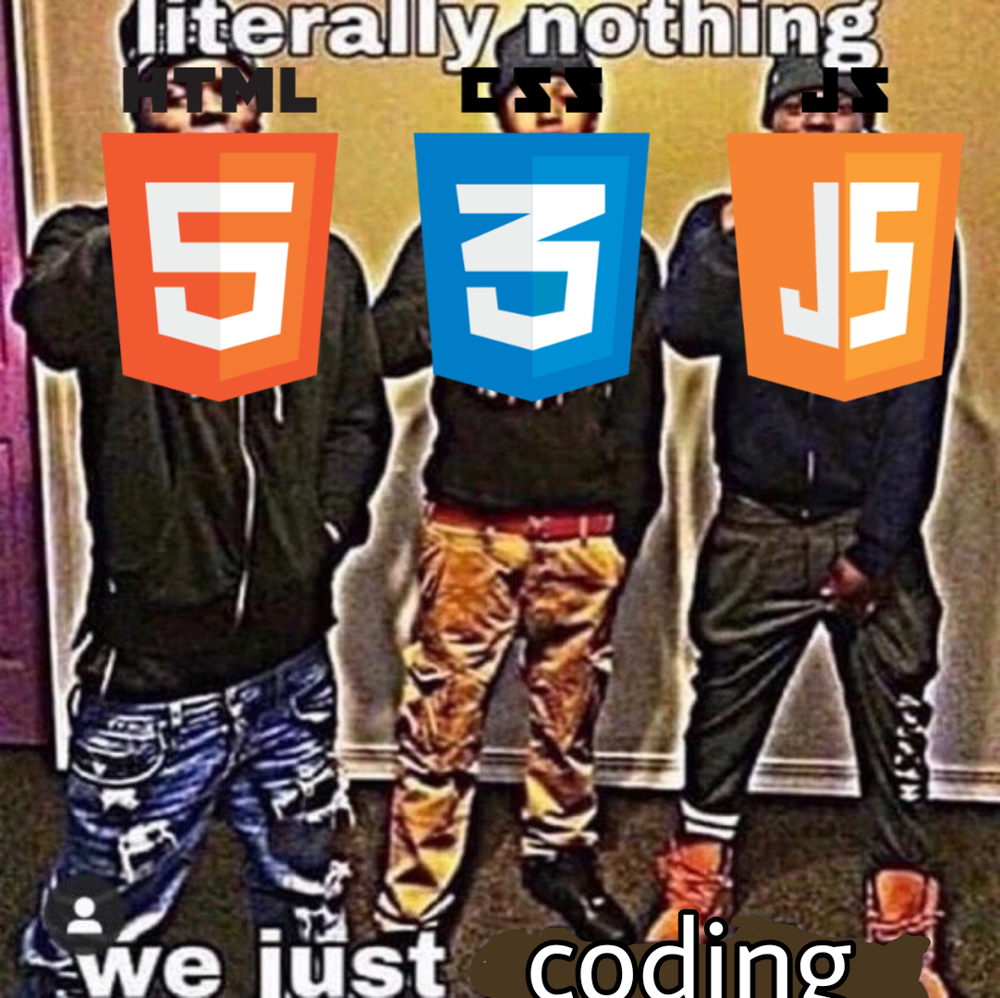

What Do I Wish to Learn With Coding?
All tags and definitions courtesy of W3 School and their HTML Reference by Alphabet page.
| Scripting Tag | Definition |
|---|---|
| The <noscript> tag | An alternate definition flag with the purpose of only being displayed for those who do not have scripts enabled or supported in their current browser. |
| The <select> and <option> tags | Tags that work in conjunction as a way to create a list of options for the sake of processing the user's personal input |
As I progress through this class, I look forward to fully understanding how to utilize these aforementioned tags and the many others this programming language offers.